Training a UNet denoiser on MNIST, then turning it into a time- and class-conditioned flow matching model
In Part A I used a pretrained flow model. Here I built and trained one myself on MNIST. Part 1 trains a UNet to remove noise from a digit in one step, and shows why that can't generate new images: given pure noise, the best it can do is output the average digit. Part 2 fixes this with flow matching, where the network learns a velocity that moves an image from noise (t = 0) to a digit (t = 1) a little at a time. Adding the time and then the class label as inputs gives a model that can draw a specific digit on demand.
The UNet takes a 1×28×28 image and returns one of the same size. The left half downsamples twice (28 → 14 → 7), then average-pools down to 1×1, which forces the network to summarize the whole image. The right half upsamples back to 28×28. At each size the encoder features are concatenated onto the decoder's (the skip connections), so fine detail like stroke edges doesn't have to squeeze through the bottleneck.
| Block | What it does | Output size |
|---|---|---|
| ConvBlock | two 3×3 Conv → BatchNorm → GELU | D × 28 × 28 |
| DownBlock | 3×3 conv, stride 2, then a ConvBlock | D × 14 × 14 |
| DownBlock | same, doubling channels | 2D × 7 × 7 |
| Flatten | 7×7 average pool + GELU | 2D × 1 × 1 |
| Unflatten | 7×7 transposed conv, stride 7 | 2D × 7 × 7 |
| UpBlock | concat skip, 4×4 transposed conv (stride 2), ConvBlock | D × 14 × 14 |
| UpBlock | concat skip, same | D × 28 × 28 |
| ConvBlock + Conv | concat skip, ConvBlock, 3×3 conv to 1 channel | 1 × 28 × 28 |
class UnconditionalUNet(nn.Module):
def __init__(self, in_channels, num_hiddens):
super().__init__()
D = num_hiddens
self.init_conv = ConvBlock(in_channels, D) # (D, 28, 28)
self.down1 = DownBlock(D, D) # (D, 14, 14)
self.down2 = DownBlock(D, 2 * D) # (2D, 7, 7)
self.flatten = Flatten() # (2D, 1, 1)
self.unflatten = Unflatten(2 * D) # (2D, 7, 7)
self.up1 = UpBlock(4 * D, D) # cat(2D, 2D) -> (D, 14, 14)
self.up2 = UpBlock(2 * D, D) # cat(D, D) -> (D, 28, 28)
self.final = ConvBlock(2 * D, D)
self.out = nn.Conv2d(D, in_channels, 3, 1, 1)
def forward(self, x):
x0 = self.init_conv(x)
d1 = self.down1(x0)
d2 = self.down2(d1)
h = self.unflatten(self.flatten(d2))
u1 = self.up1(torch.cat([d2, h], dim=1))
u2 = self.up2(torch.cat([d1, u1], dim=1))
return self.out(self.final(torch.cat([x0, u2], dim=1)))To make training pairs, I add Gaussian noise of strength σ to a clean digit x:
The UNet gets z and is trained to output x with an MSE loss. At σ = 1 the digit is still faintly visible, but most of what you see is noise.
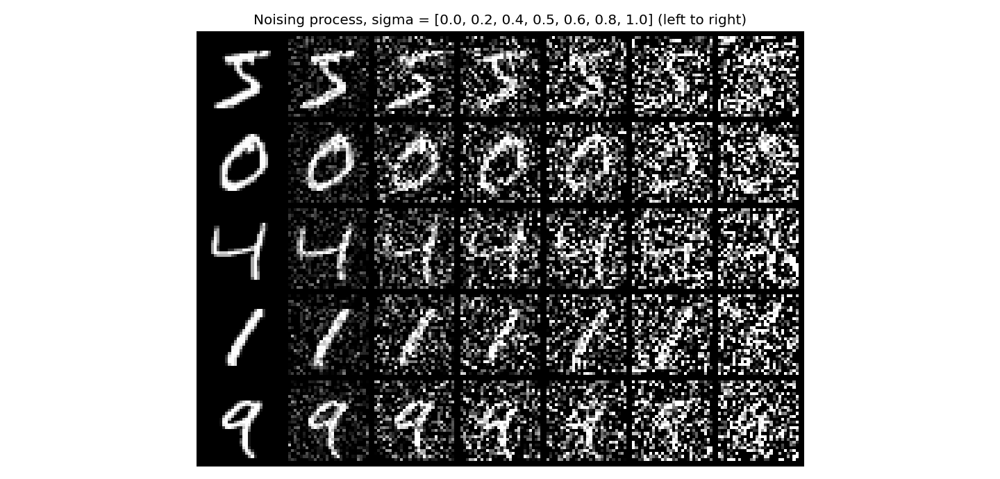
I trained at σ = 0.5 with the recommended settings. New noise is drawn for every batch, so the model never sees the same noisy image twice.
| Setting | Value |
|---|---|
| Hidden dimension D | 128 |
| Batch size | 256 |
| Optimizer | Adam, lr = 1e-4 |
| Noise level σ | 0.5 |
| Epochs | 5 |
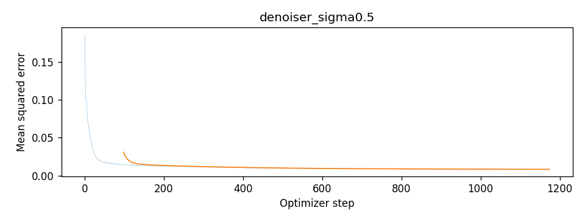
To compare the two checkpoints fairly, I ran both on the same test digits with the same noise.
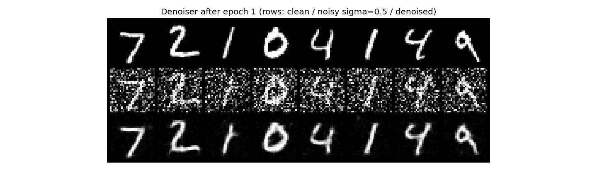
After epoch 1. Rows: clean, noisy (σ = 0.5), denoised.
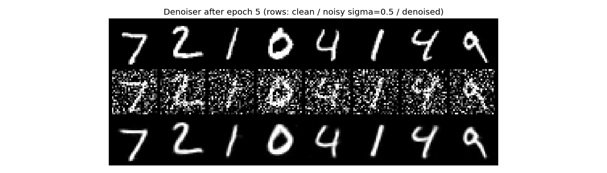
After epoch 5. Same inputs.
After one epoch the digits are already easy to read, but there are faint gray specks in the background and a few stray marks on the strokes. After five epochs the background is fully black and the stray marks are gone. The difference is small, so most of the learning happens in the first epoch.
The denoiser only ever saw σ = 0.5. Here I ran it on the same test digits at other noise levels without retraining.
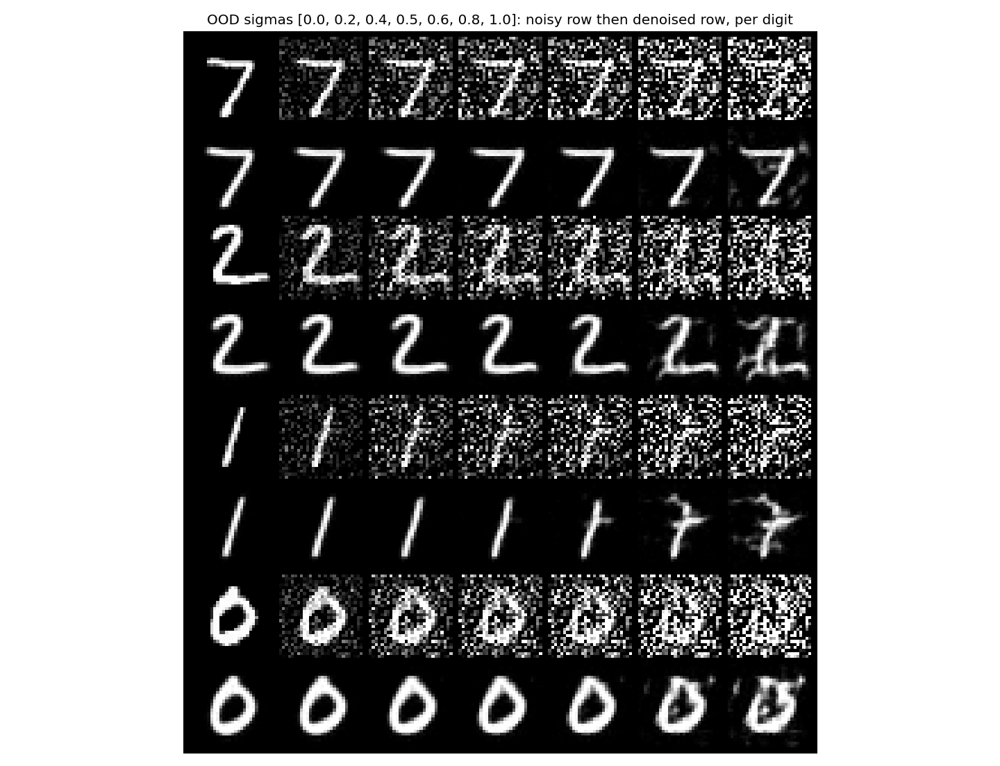
Up to σ = 0.6 the outputs look almost the same as the clean digits, so less noise than it was trained on is no problem. It starts breaking at 0.8 and is clearly worse at 1.0. The 1 grows a bar and starts to look like a 7, the 2 picks up smudges, and the 0 gets partly filled in. The model learned how much noise to remove at 0.5, so with more it keeps some of the noise as extra strokes.
To see if a one-step denoiser can generate images, I trained a fresh UNet (same settings, 5 epochs) where the input is pure noise z ~ N(0, I) with no digit in it, and the target is still a clean digit.
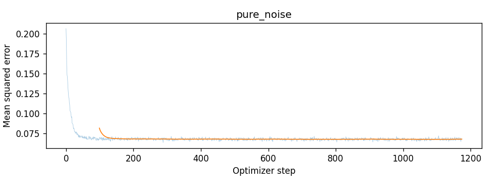
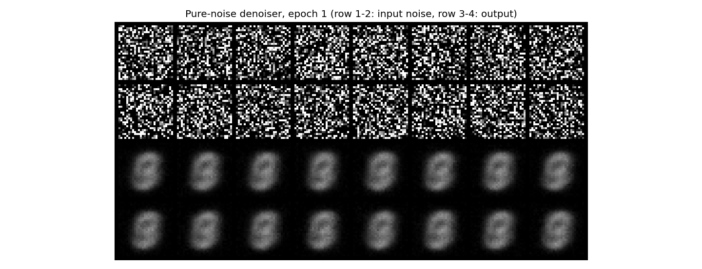
After epoch 1. Top two rows: input noise. Bottom two rows: outputs.
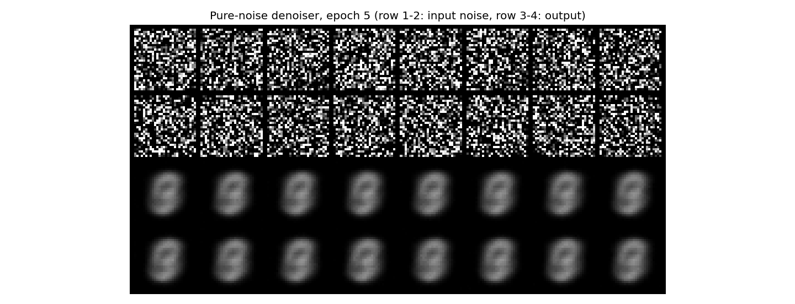
After epoch 5. Same input noise.
Every output is the same blurry blob no matter what noise goes in, and it looks almost identical to the average training image. This comes from the loss. With MSE, the best prediction for an input is the average of all the targets that could go with it:
Here the noise has nothing to do with the digit, so it gives no hint about which one is wanted, and E[x | z] is just E[x], the mean of the training set. The network learns to ignore its input. My outputs look like a blurry 8, an oval with a brighter band through the middle, which is where the strokes of 0, 3, 8 and 9 overlap most. Digits like 1 and 7 only add a faint vertical smear. Epochs 1 and 5 look nearly the same. This is why one-step denoising can't make new digits, and it's what Part 2 fixes.
Flow matching builds a path from a noise image x0 to a real digit x1. I use a straight line, so at time t the image is a blend of the two:
The velocity along this line is constant:
The UNet uθ(xt, t) learns to predict this velocity. To sample, I start from noise and follow the predicted velocity in small Euler steps until t = 1. Unlike Part 1, the network never has to make a digit in one jump. It only has to say which way to move from where it is.
The right direction depends on how noisy the image is, so the network needs to know t. I pass t through two small fully connected blocks (Linear → GELU → Linear) and multiply the results into the decoder, once after the Unflatten (2D channels) and once after the first UpBlock (D channels). The time vector is reshaped to N × C × 1 × 1 so it applies to every pixel.
def forward(self, x, t):
t = t.view(-1, 1)
t1 = self.fc1_t(t)[:, :, None, None] # (N, 2D, 1, 1)
t2 = self.fc2_t(t)[:, :, None, None] # (N, D, 1, 1)
x0 = self.init_conv(x)
d1 = self.down1(x0)
d2 = self.down2(d1)
h = self.unflatten(self.flatten(d2)) * t1 # inject t
u1 = self.up1(torch.cat([d2, h], dim=1)) * t2 # inject t again
u2 = self.up2(torch.cat([d1, u1], dim=1))
return self.out(self.final(torch.cat([x0, u2], dim=1)))Each step takes a batch of digits, fresh noise for each one, and a random t ~ U[0, 1]. The loss is the squared error between the predicted and true velocity:
def time_fm_forward(unet, x_1, num_ts):
x_0 = torch.randn_like(x_1) # noise at t = 0
t = torch.rand(x_1.shape[0], device=x_1.device) # t ~ U[0, 1]
tt = t.view(-1, 1, 1, 1)
x_t = (1 - tt) * x_0 + tt * x_1 # point on the straight path
return F.mse_loss(unet(x_t, t), x_1 - x_0) # predict velocity, not noise| Setting | Value |
|---|---|
| Hidden dimension D | 64 |
| Batch size | 64 |
| Optimizer | Adam, initial lr = 1e-2 |
| LR schedule | exponential decay, γ = 0.11/10 per epoch (lr falls 10× over training) |
| Epochs | 10 |
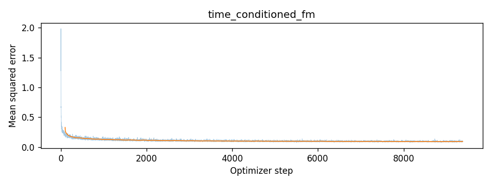
The loss drops from about 2.0 to under 0.2 in the first few hundred steps, then levels off around 0.1. Unlike the denoiser, it never gets close to zero. Many different (x0, x1) pairs could produce the same xt, so the target velocity is partly unpredictable and the loss can't go to zero.
Sampling starts from x ~ N(0, I) at t = 0 and takes 50 Euler steps of size 1/50:
I used the same seed for every checkpoint, so each grid position starts from the same noise.
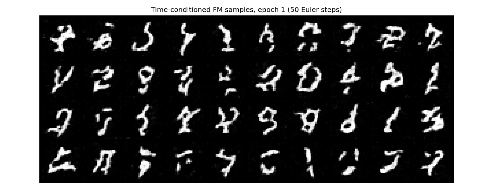
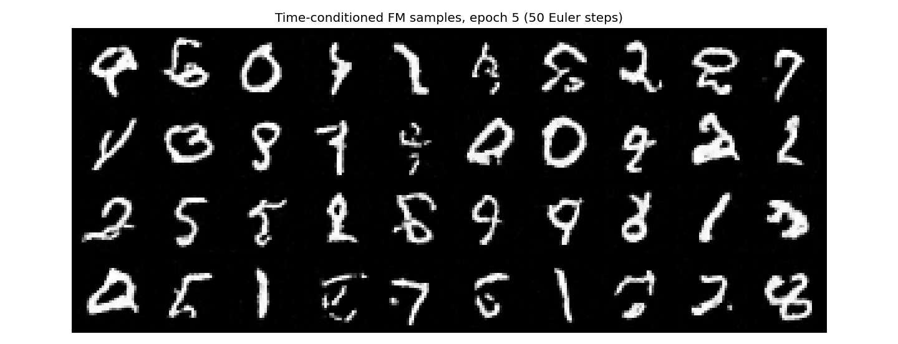
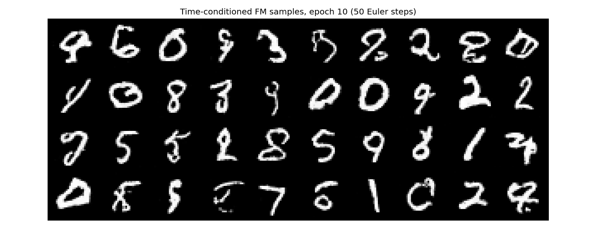
At epoch 1 most samples are squiggles, and only a few (some 1s and 7s) are real digits. By epoch 5 a good number are readable, and by epoch 10 there are more clean ones (6, 0, 3, 8, 2, 5, 9). Still, a lot of them are odd shapes that look like two digits mixed together. Since the seed is fixed, each sample keeps roughly the same shape across epochs and just gets cleaner. There's also no way to ask this model for a particular digit, which the next part adds.
To pick which digit gets generated, I pass the class as a one-hot vector of length 10 through two more FCBlocks. The class embedding scales the features and the time embedding shifts them:
During training I drop the class 10% of the time by zeroing the one-hot vector. That way one network learns both to draw a given digit and to draw any digit, and classifier-free guidance needs both.
# inside ClassConditionalUNet.forward
c_vec = F.one_hot(c, 10).float()
if mask is not None:
c_vec = c_vec * mask.view(-1, 1) # all zeros = "no class"
c1, c2 = self.fc1_c(c_vec), self.fc2_c(c_vec)
...
h = c1[:, :, None, None] * self.unflatten(self.flatten(d2)) + t1[:, :, None, None]
u1 = c2[:, :, None, None] * self.up1(torch.cat([d2, h], 1)) + t2[:, :, None, None]
# inside class_fm_forward
mask = (torch.rand(N, device=x_1.device) >= p_uncond).float() # 0 with prob 0.1Training is the same as Part 2.2 (D = 64, batch size 64, Adam from lr = 1e-2 with exponential decay, 10 epochs), plus the labels and the 10% class dropout.
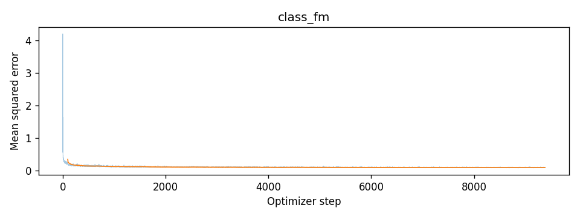
At each step I run the model twice on the same image, once with the class (vc) and once without (vu). Classifier-free guidance pushes past the conditional prediction, toward whatever makes the image look more like the requested digit:
I used 300 Euler steps and generated four of each digit (one digit per column), with the same seed at every checkpoint.
x = torch.randn(N, 1, 28, 28, generator=g).to(dev)
dt = 1.0 / num_ts
for i in range(num_ts):
t = torch.full((N,), i * dt, device=dev)
v_c = unet(x, c, t, ones) # with class
v_u = unet(x, c, t, zeros) # class dropped
v = v_u + guidance_scale * (v_c - v_u)
x = x + dt * v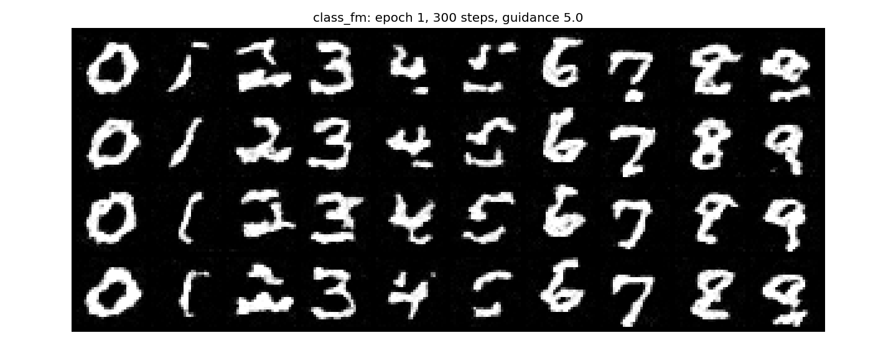
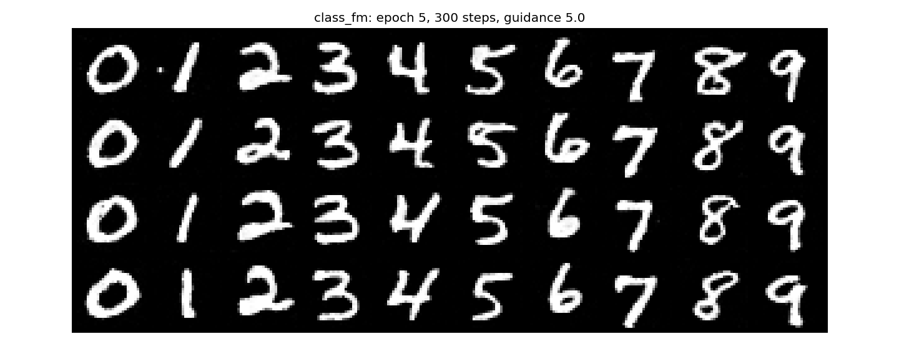
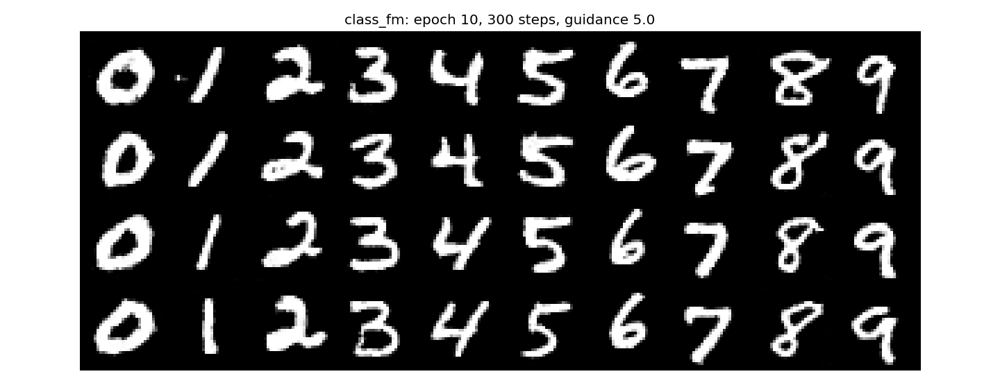
At epoch 1 the 0s, 3s, 6s and 7s are already clear, but the 1s are short curved marks and the 2, 4, 5, 8 and 9 columns are broken or blotchy. By epoch 5 every column has the right digit in all four rows, a big jump from the time-only model. Epoch 10 looks almost the same as epoch 5. Guidance makes the strokes thick and high-contrast, but the four samples of each digit still vary in slant and style.
The scheduler starts with a large learning rate to learn the digit shapes quickly, then shrinks it so the weights settle at the end. Without one I have to pick a single rate. 1e-2 the whole way would be too big to settle, so I used a constant 1e-3, which is about where the scheduled run ends up. Everything else (seed, data order, architecture, epochs) stayed the same.
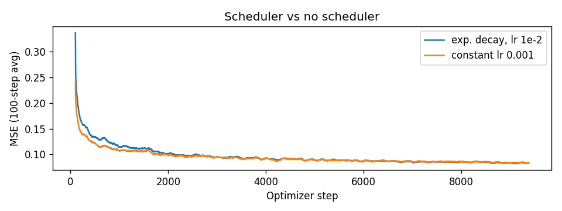
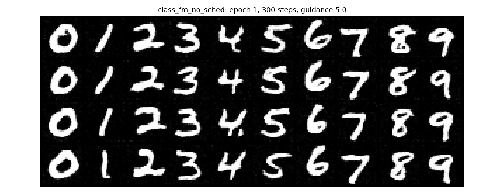
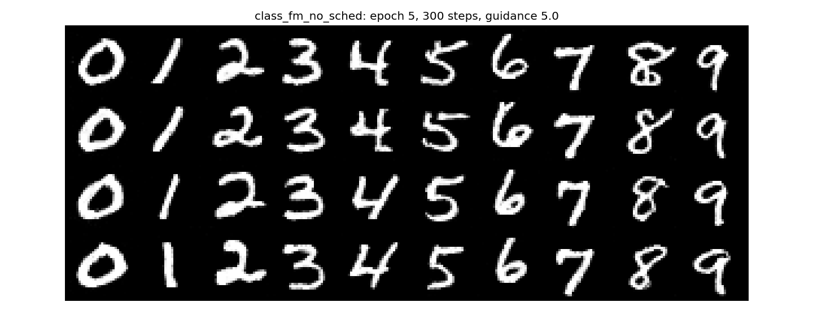
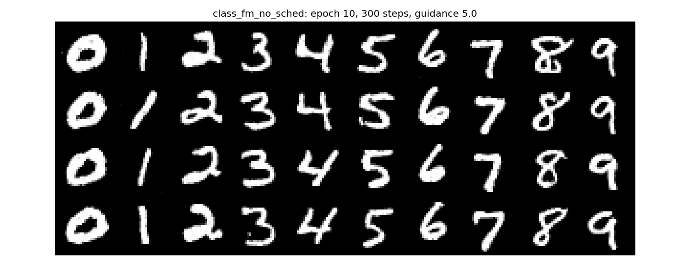
Surprisingly, the epoch 1 samples are better without the scheduler. All ten digits are already clear, while the scheduled run still had broken 2s, 4s and 8s at that point. So 1e-2 seems too large to start with for this model, and the scheduler only fixes that once the rate has decayed. The loss curves agree: the constant-rate run is lower for about the first 2,000 steps, then the two overlap and both end around 0.085. By epochs 5 and 10 the samples look the same. Lowering the rate to a constant 1e-3 was enough to make up for removing the scheduler.
The pure-noise experiment was what made the rest of the project click for me. Every output collapsed to the same blurry 8 that matched the mean training image, and the network wasn't broken. It was doing exactly what MSE asks for when the input tells it nothing. Flow matching gets around this because each step only has to pick a direction from an image that already has some structure. I also learned not to assume the recommended settings are the best ones. Dropping the scheduler for a smaller constant rate gave better samples at epoch 1 and the same results by epoch 10.